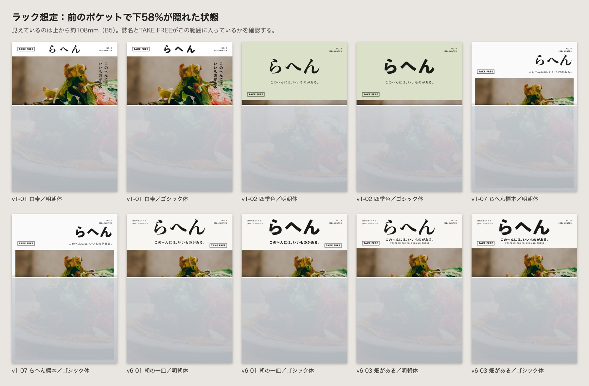
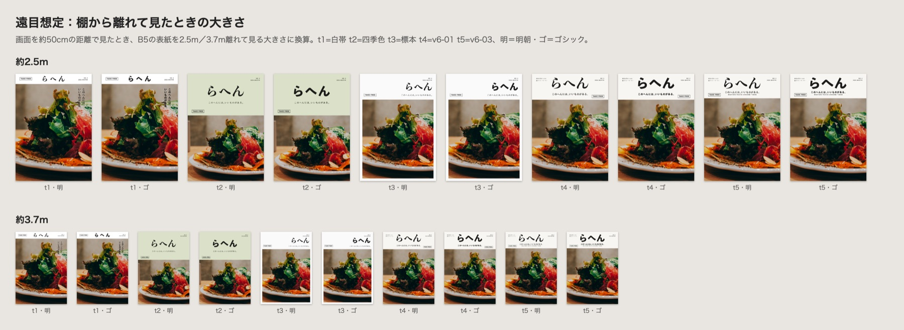
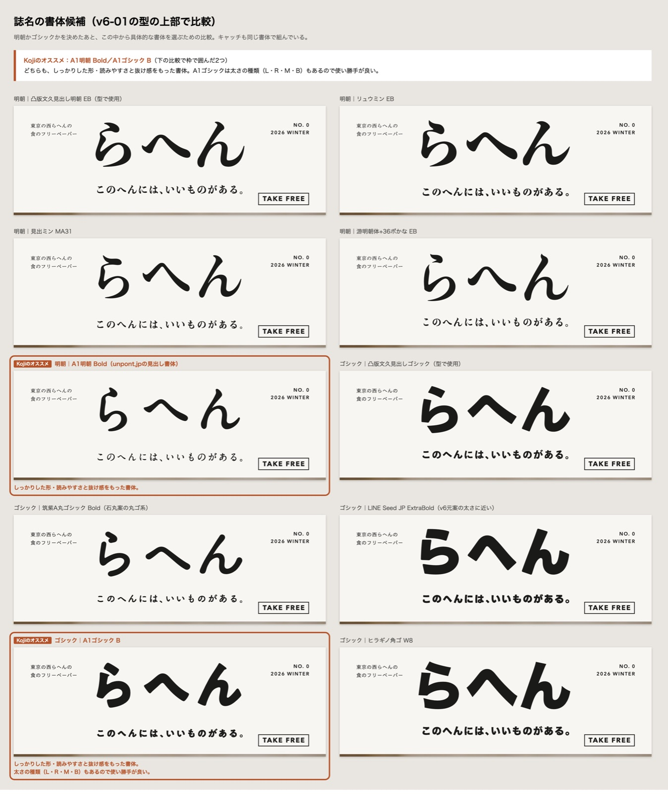

5つの型：元案／明朝体／ゴシック体
v1-01 白帯
上端24.5mmの白帯に誌名だけ。写真は帯の下すべて。キャッチは写真の上に縦組み（写真の右上が明るいので黒文字）。
v1-02 四季色
上99.7mmが季節色の帯（号ごとに色替え）。誌名とキャッチは帯の中央。写真は下157.3mm。
v1-07 らへん標本
白地。誌名とキャッチは右寄せ。写真は上62mmから白フチ6.1mmで配置。
v6-01 朝の一皿
上62.2mmの生成り地に大きな誌名とキャッチ。写真は下194.8mm。TAKE FREEは帯の右下。
v6-03 畑がある
上58.7mmの生成り地に誌名・キャッチ・英語タグライン。TAKE FREEは帯の左下。
ラック想定（前のポケットで下が隠れた状態）

遠目想定（2.5m・3.7m）
画面の表示倍率で見え方が変わるため、型どうしの相対比較用。実際の読みやすさはB5実寸の出力を離れて見て確かめる。

誌名の書体候補（明朝かゴシックかを決めたあとに選ぶ）
Kojiのオススメ：A1明朝 Bold／A1ゴシック B
- どちらも、しっかりした形・読みやすさと抜け感をもった書体。
- A1ゴシックは太さの種類（L・R・M・B）もあるので使い勝手が良い。
- 下の比較では、オススメの2つを枠で囲んでいる。

型の寸法（B5・mm）
| 型 | 上の帯 | 誌名 | キャッチ | TAKE FREE | 写真 |
|---|---|---|---|---|---|
| v1-01 白帯 | 24.5mm | 中央・15.3mm・字間0.32em | 写真の右上に縦組み2行・6.1mm（写真の明るさで黒／白） | 帯の左・ラベル | 24.5〜257mm（全面） |
| v1-02 四季色 | 99.7mm（季節色） | 中央・29.4mm | 誌名の下・5.1mm | 帯の左下・ラベル | 99.7〜257mm（全面） |
| v1-07 らへん標本 | なし（白地） | 右寄せ・21.4mm | 誌名の下に右寄せ・4.7mm | 左・キャッチと同じ行・ラベル | 62〜250.9mm（左右下6.1mmの白フチ） |
| v6-01 朝の一皿 | 62.2mm（生成り） | 中央・30.6mm | 誌名の下・5.6mm | 帯の右下・ラベル | 62.2〜257mm（全面） |
| v6-03 畑がある | 58.7mm（生成り） | 中央・30.6mm | 誌名の下・5.4mm＋英語2.8mm | 帯の左下・ラベル | 58.7〜257mm（全面） |
元データ：assets/edit/cover-type/（型のHTML・生成スクリプト）。書き出し：output/cover-type_写真4_ガレット横から/（PNG・PDF）。型のHTML：assets/edit/cover-type/variants/p4/。